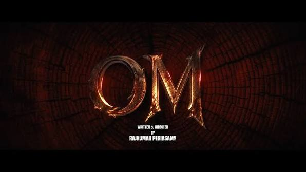

OM MOVIEOM – Chapter 1: Udhiram - The Blood Wood is Dhanush's 55th film (D55), directed by Rajkumar Periasamy. The intense action drama features an ensemble cast including Mammootty, Sai Pallavi, and Sreeleela, and is set to release on October 16, 2026.About the Movie & LogoTitle Reveal: The striking title logo and teaser ("First Strike") were unveiled by The Times of India and other media platforms in June 2026.The Logo / Vibe: The gritty title treatment reflects a dark, forest-based conflict with the subtitle Udhiram: The Blood Wood.Plot Details: The story is inspired by real events and follows a fierce conflict involving forest woodcutters and armed forces in Tamil Nadu.Cast & Crew: Headlined by Dhanush and Mammootty, with music composed by Sai Abhyankkar.